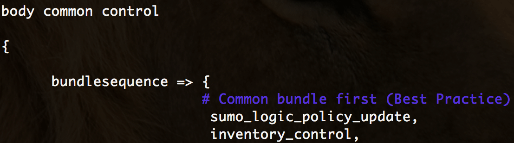
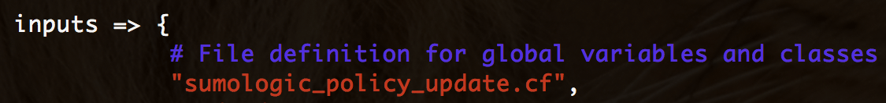

Integrating with Sumo Logic
In this How To we will show a simple integrate with Sumo Logic. Whenever there is a CFEngine policy update, that event will be exported to Sumo Logic. These events can become valuable traces when using Sumo Logic to analyze and detect unintendent system behavior.
Requirements:
- CFEngine Community/Enterprise
- Sumo Logic account (secret URL)
How it works
Whenever there is a policy update or a new policy is detected by CFEngine, a special variable called "sys.last_policy_update" will be updated with current timestamp.
We will store this timestamp in a file, and then via api upload the file to Sumo Logic.
Create the CFEngine Policy file
In this section we will explain the most important parts of our policy file.
First, we define a couple of variables.
policy_udpate_file is the variable that contains the name of the file where we will store the timestamp and eventually upload to Sumo Logic.
The two Sumo variables are used to access the service, while the curl_args is the actual curl command that will upload our timestamp file to Sumo Logic.
vars:
"policy_update_file"
string => "/tmp/CFEngine_policy_updated";
"sumo_url"
string => "https://collectors.sumologic.com/receiver/v1/http/";
"sumo_secret"
string => "ZaVnC4dhaV1-MY_SECRET_KEY";
"curl_args"
string => "-X POST -T $(policy_update_file) $(sumo_url)$(sumo_secret)";
In this next section we tell CFEngine to ensure that the /tmp/CFEngine_policy_updated file, as defined by the variable policy_update_file always exists.
We also ensures that the content of this file will be the value of the sys.last_policy_update variable which we now know is the timestamp. We further set a class called new_policy_update every time there is a change in the file. This class later becomes the trigger point for when to upload the file to Sumo Logic.
Finally, below you will see a body defining how CFEngine is going to detect changes in policy files, this time using an md5 hash and only looking for change in the content (not permissions or ownership).
files:
"$(policy_update_file)"
create => "true",
edit_line => insert("CFEngine_update: $(sys.last_policy_update)"),
edit_defaults => file;
"$(policy_update_file)"
classes => if_repaired("new_policy_update"),
changes => change_detections;
body changes change_detections
{
hash => "md5";
update_hashes => "true";
report_changes => "content";
report_diffs => "true";
}
The final section in the CFEngine policy is where the command that uploads the file with the timestamp to Sumo Logic is defined.
The command will only be issued whenever a class called new_policy_update is set, which we above defined to be set when there is a change detection. The handle argument is a useful way to document your intentions.
commands:
new_policy_update::
"/usr/bin/curl"
args => "$(curl_args)",
classes => if_repaired("new_policy_update_sent_to_sumo_logic"),
contain => shell_command,
handle => "New sumo logic event created";
That's it! You can copy and paste the whole policy file at the bottom of this page.
Save the policy file you make as /tmp/sumologic_policy_update.cf
Ensure the policy always runs
Normally, to ensure your policy file is put into action, you would need to follow these two steps:
- Move the policy file to your masterfiles directory:
# mv /tmp/sumo.cf /var/cfengine/masterfiles/
Modify
promises.cfto include your policyUnless you use version control system, or has a non-standard CFEngine setup, modify your
promises.cffile by adding the new bundle name and policy-file so it will be picked up by CFEngine and be part of all it future runs.
# vi /var/cfengine/masterfiles/promises.cf
Under the body common control, add sumo_logic_policy_update to your bundle sequence.

Under body common control, add /sumologic_policy_update.cf/ to your inputs section.

That's all.
Test it!
To test it, we need to make a change to any CFEngine policy, and then go to Sumo Logic to see if there is a new timestamp reported.
- Make a change to any policy file, for examle
promises.cf:
# vi /var/cfengine/masterfiles/promises.cf
Add a comment and close the file.
- Check if timestamp has been updated
# cat /tmp/CFEngine_policy_updated
- Check with Sumo Logic

Mission Accomplished!
As we can see above CFEngine detected a change on Thursday Oct 2 at 01:16:42 and also at 01:13:45.
Source-code:
The policy as found in sumologic_policy_update.cf.
bundle agent sumo_logic_policy_update
{
vars:
"policy_update_file"
string => "/tmp/CFEngine_policy_updated";
"sumo_url"
string => "https://collectors.sumologic.com/receiver/v1/http/";
"sumo_secret"
string => "MY_SECRET_KEY";
"curl_args"
string => "-X POST -T $(policy_update_file) $(sumo_url)$(sumo_secret)";
files:
"$(policy_update_file)"
create => "true",
edit_line => insert("CFEngine_update: $(sys.last_policy_update)"),
edit_defaults => file;
"$(policy_update_file)"
classes => if_repaired("new_policy_update"),
changes => change_detections;
commands:
new_policy_update::
"/usr/bin/curl"
args => "$(curl_args)",
classes => if_repaired("new_policy_update_sent_to_sumo_logic"),
contain => shell_command,
handle => "New sumo logic event created";
}
body changes change_detections
{
hash => "md5";
update_hashes => "true";
report_changes => "content";
report_diffs => "true";
}
body contain shell_command
{
useshell => "useshell";
}
bundle edit_line insert(str)
{
insert_lines:
"$(str)";
}
body edit_defaults file
{
empty_file_before_editing => "true";
}